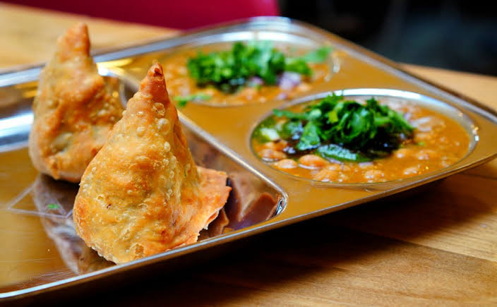

Samosa

Description
Samosa is a crispy, deep-fried pastry filled with a savory mixture of
potatoes, peas, and spices. It is a popular snack across South Asia and
is often enjoyed with tea or chutney.
Samosas are known for their crunchy outer shell and flavorful filling.
They can also be prepared with meat or cheese, making them a versatile
and delicious appetizer.
Ingredients
- 2 cups all-purpose flour
- 3 potatoes (boiled and mashed)
- 1/2 cup green peas
- 1 onion (finely chopped)
- 1 teaspoon ginger-garlic paste
- 1 teaspoon cumin seeds
- 1 teaspoon garam masala
- Salt
- Cooking oil
Steps
- Prepare a soft dough using flour, water, and a little oil.
- Cook the onion, ginger-garlic paste, potatoes, peas, and spices together.
- Roll the dough into circles and cut each into two halves.
- Shape each half into a cone and fill it with the potato mixture.
- Seal the edges tightly with water.
- Deep-fry the samosas until golden brown and crispy.
- Serve hot with mint or tamarind chutney.
Home